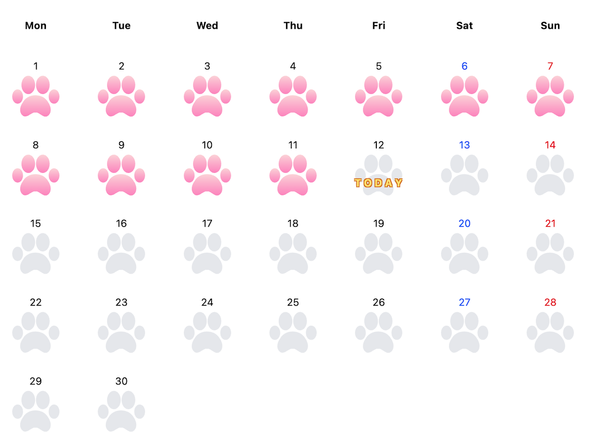
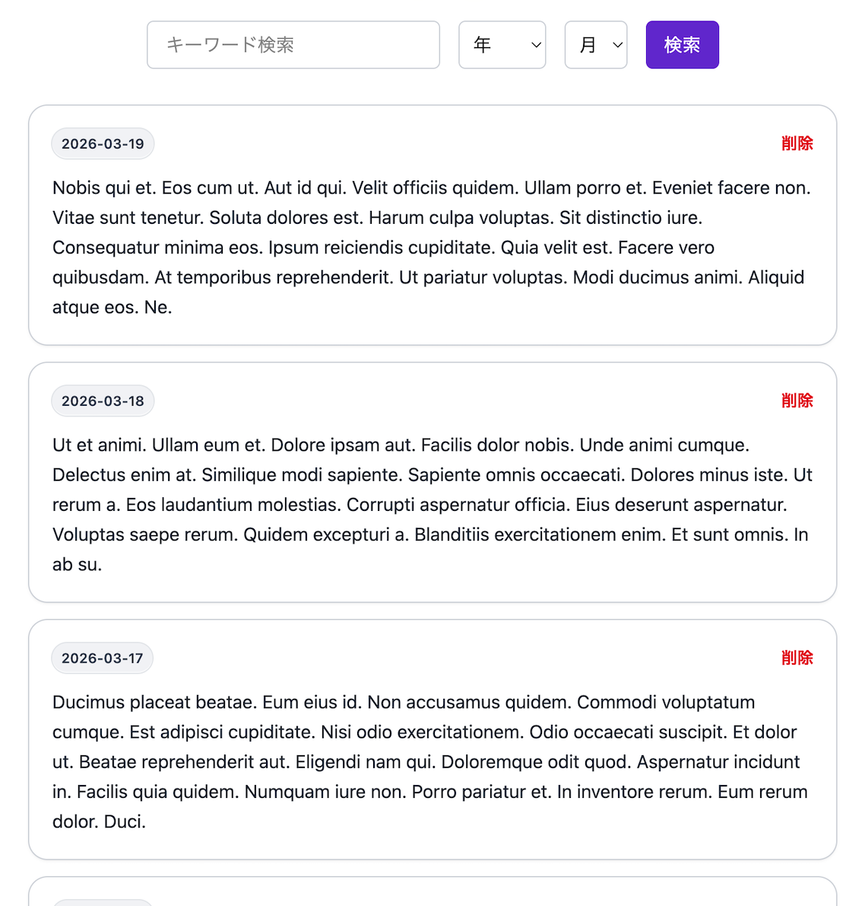
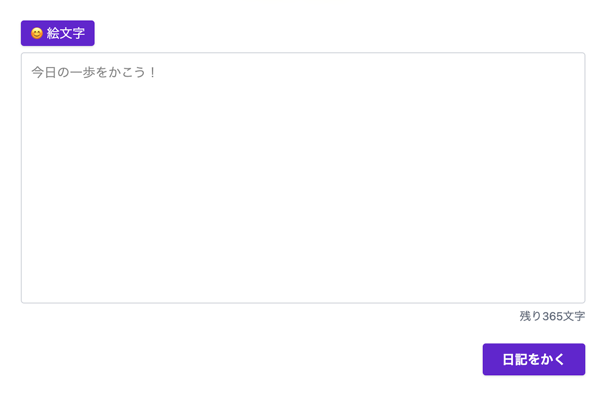

カレンダー画面
日々の足あとを一目で確認し、投稿のリズムを可視化します。
Portfolio Landing Page
日々の足あとを描く、1日1投稿の小さな日記アプリ
Pawthは、日々の歩みを可視化し、その日の記録にコミットするための日記アプリです。
アプリ画面紹介

日々の足あとを一目で確認し、投稿のリズムを可視化します。

過去の投稿を振り返りやすく、内省のための一覧表示です。

1日1投稿のシンプルな入力体験で、気軽に記録できます。
コンセプト
毎日の記録に制約を設けることで、投稿の価値を高めます。
今日の記録はその日の自分への約束として残します。
振り返りを促しつつ、過度な修正を防ぎます。
時間を置いた判断で整理できる柔軟性を残します。
非採用機能
技術・設計ポイント
ポートフォリオとしての見どころ
単なるCRUDではなく、習慣化と内省を支える設計。
UIだけでなく、使い方の制約まで設計している。
QA・UX視点を意識した個人開発。
現在、本番環境の公開は停止しています。